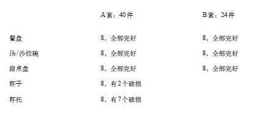

少即是多的逻辑悖论
芝加哥大学的奚恺元（Christopher Hsee）让人们在当地一家商店清仓大甩卖时为几套餐具标价，当地餐具的价位一般在30~60美元。他将受试者分成三个小组，其中一个组看了下面的标价，奚恺元将这组标价标注为“综合评估”，因为受试者可以对两套餐具进行对比。另外两组只看了其中一组的标价，此谓“单一评估”。综合评估是组内实验，而单个评估则是组间评估。

假设A、B两套餐具质量相当，那么哪套更值钱呢？这个问题很简单。你可以看到A套包括B套所有的餐具，另外还多出7件完好无损的餐具，所以A套“必然”更值钱。的确，综合评估组的受试者宁愿多花点钱买A套餐具也不愿买B套，A套标价为32美元，B家标价为30美元。
在单一评估组中则出现了完全相反的结果，其中B套标价（33美元）比A套（23美元）高很多，我们都知道为何会出现这一结果。用具组合（包括餐具）通过标准和原型展示出来，因为没有人想买破损的餐具，于是你立即感觉到A套组合的平均价值比B套组合的平均价值低。如果以平均价值引导估测，人们认为B套更值钱也就不足为奇了。奚恺元将这样的结果模式称为“少即是多”。从A套中拿走16件餐具（有7件是完好无损的），它的价值就会提升了。
实验经济学家约翰·李斯特（John List）对奚恺元的发现进行了复制，他在真正的市场上拍卖两套相同的高价值棒球卡片，每套各为10张，但其中一套附赠3张普通价值的卡片。就像餐具的例子一样，在综合评估中，数量多的组合会比少的更有价值，但在单一评估中则正好相反。从经济理论的角度来看，一套餐具或一套棒球卡片的经济价值是一种总体变量，给任何一套加上一个有价值的物件只能提升它的价值。如果是这样，这个结果就有些令人烦恼了。
琳达问题和餐具问题的结构完全相同。概率就像是经济价值，是一种总体变量，我可以通过以下这个例子加以说明：
概率（琳达是个出纳）=概率（琳达是个女权主义出纳）+概率（琳达是个非女权主义出纳）
这就是为什么琳达问题的单一评估产生了一种“少即是多”的模式，这一点与奚恺元的餐具实验一样。系统1会取价值的平均值而不是累加值，因此，当我们将非女权主义的银行出纳从银行出纳的大集合中移除后，主观（判定）的概率就会加大。然而，变量的总体性对概率判断的影响要小于其对金钱的影响。因此，综合评估只是消除了奚恺元的实验中出现的错误，却无法消除琳达实验中出现的错误。
琳达不是唯一一个在综合评估中得以存在的合取谬误，我们在其他许多判断中也发现了有悖逻辑的类似情况，其中一项研究的受试者被要求从高到低排列下一届温布尔登网球赛的4个可能结果，比约•伯格（Björn Borg）是研究进行当日的主要网球比赛运动员。以下即为结果：
A.伯格会赢得比赛。
B.伯格会输掉首局。
C.伯格会输掉首局，但会赢得比赛。
D.伯格会赢得首局，但会输掉比赛。
上述结果中B和C两项比较重要。B囊括的内容更多，其概率“一定”比自身所包含的一个事件发生的概率大。受试者给出的答案与逻辑相悖，却顺应了典型性和貌似合理性，72%的人认为B选项比C选项的可能性更小—又一个通过直接比较得出“少即是多”的例子。这一次受试者选出的可能性最大的描述无疑貌似更合理，更符合当今世界一流网球运动员身上所具有的所有公认的特质。
合取谬误是因为对概率的误解，为阻止可能会出现的异议，我们设计了一个需要作出概率判断的问题，但在这个问题中，事件不是用文字来描述的，而且“概率”这个词一次也没有出现过。我们告诉受试者有一个标准的六面骰子，其中四面是绿色的，两面是红色的，此骰子可被投掷20次。我们给他们看了三组预设的结果，都是绿色（G）和红色（R）的任意排列，并让他们选一组。如果他们选择的那组正好出现，他们会（假想）得到25美元。这三组是：
1. RGRRR
2. GRGRRR
3. GRRRRR
因为这个骰子绿色面的数量是红色的2倍，第一组就很不具代表性—就像琳达是个银行出纳这一选项一样。第二组包括6次投掷结果，与预期投骰子结果更为符合，因为它有两个G。但是这个结果在设计时只是在第一种序列的开头加了个G，所以它比第一组更不可能，只是相当于“琳达是个积极参与女权主义的银行出纳”的非言语表达。与琳达的研究一样，典型性主导着上例的结果。几乎2/3的受试者更愿意在第二组上下注，而不愿赌第一组。然而，当人们看到支持两种选择的理由时，大多数人发现正确的理由（偏向第一组的）更可信。
下一个问题是个突破，因为我们终于找到了可以降低合取谬误的条件。两组受试者看到同一个问题，但其变量稍显不同：
不列颠的哥伦比亚省针对成年男子样本作了一个健康调查，这些男子年龄不同，职业也不同。请对以下价值给出最佳评估：
在被调查的男子中，有几成人有过一次甚至多次心脏病发作的经历？
在被调查的男子中，有几成人既超过了55岁又有过一次甚至多次心脏病发作的经历？
不列颠的哥伦比亚省对一个由100名成年男性构成的样本进行了调查，这些男性年龄不同，职业也不同。请对以下价值给出最佳评估：
100名受试者中有多少位有过一次甚至多次心脏病发作的经历？
100名受试者中有多少超过55岁又有过一次甚至多次心脏病发作的经历？
看左栏问题的小组的错误率为65%，而看右栏的小组的错误率仅为25%。
为什么“在100名受试者中有多少……”的问题比“有几成人……”更容易回答？有一个可能的解释是“100名”这个参考值给大脑一种空间上的暗示。假使有很多人按照指示把自己归到一间屋子里的不同小组中去：“名字首字母是A到L之间的人到房间的左前方角落去。”然后这个小组中的人再按照指示进一步分组。这种包含的关系现在已经很明显了，你会看到名字以C字母开头的人是左前方角落中那群人的一分子。在这个医学调查问题中，心脏病患者最终会走到屋子的某个角落，他们中有些人不足55岁。不是每个人都能想象出这一场景的，但很多后续实验显示，人们所熟知的典型频率会使人们更容易理解一个组完全被另一个组包含的概念。上述问题中的“多少”使你想到了个体，但“几成”就不会使你有这种联想，从这点来看，这个难题的答案就不难理解了。
关于系统2的工作机制，我们从这些研究中能窥见多少？有一个已经不算新鲜的说法是，系统2并非时刻处于警惕状态。参与我们那些合取谬误实验的大学生和研究生当然都“知道”维恩图解中的逻辑，但即使所有的相关信息都摆在面前，他们也没有对此加以运用。“少即是多”模式的荒谬在奚恺元的餐具实验中表现得淋漓尽致，在“多少”的事例中也非常容易识别出来，但对那些在最初的琳达问题以及其他相似问题中也犯了合取谬误的数千人来说，这一模式还不够明显。在所有这些例子中，合取谬误显得貌似合理，而且也获得了系统2的认可。
系统2的惰性也是导致判断失误的部分原因。如果这些受试者的下一次休假要根据此次调查结果来决定，而他们又有足够的时间，被告知要遵循逻辑，直到确定答案正确才能说出来，我相信大多数受试者都是可以避开合取谬误的。然而，（事实是）他们的休假并不取决于一个正确的答案，他们几乎没费什么时间就得出了答案，而且他们也愿意用随意的方式来回答这个问题。系统2的惰性是生活中存在的一个重要事实，而对典型性会阻碍明显的逻辑原则运用的相关观察也至关重要。
琳达问题值得注意的一个方面是：它与餐具实验的结果形成了对比。这两个问题有着相同的构造，但却产生了不同的结果。那些看到成套餐具中有破损餐具的人会给这套餐具标低价，他们的行为是直觉反应。其他能看到两套餐具并进行对比的人则能运用逻辑原则，得出多出来的餐具只是为了增加价值的结论。在组间研究情况下作判断时，直觉就会起作用，逻辑原则则在综合评估中起作用。而在琳达问题中却不是这样，直觉常会推翻逻辑，即使在综合评估中也会如此，虽然我们确定有些场合下逻辑会占主导地位，但大胆的直觉也会将其推翻。
我们在一些明确的问题中观察到了概率公然违背逻辑的现象，阿莫斯和我都认为这种有悖逻辑的现象非常有意思，值得和同事们分享。我们还相信这些结果能进一步加强我们关于判断启发式强大作用的论证，这会让怀疑者哑口无言。然而在这一点上，我们是大错特错了，琳达问题竟然成了争论规范的研究案例。
琳达问题引起了广泛的关注，它也引发了众人对我和阿莫斯关于判断的研究方法的批评。一些研究人员发现将指示和提示结合起来可以减少谬误的发生，这跟我们已有的发现没什么两样。有些人争论道，在琳达问题中，受试者将“概率”理解为“貌似合理”完全是合情合理的。这些争论有时波及我们的整个研究，说我们的所有结论都在误导公众：如果一种显著的认知错觉能被削弱或解释清楚，其他的系统功能也会如此。这个理论忽视了合取谬误是直觉和逻辑间的矛盾冲突这一特殊性。我们通过设计组间实验对启发式进行论证的论据没有受到质疑，简单地说就是没有被讨论过，而且因为过于重视合取谬误，这个证据的突出性也被掩盖了。琳达问题的净效应是我们的工作对于普通民众来说更透明了，而在此领域的学者中，我们的研究方法的可信度有了一点欠缺。当然我们绝不会料到事情会这样。
如果你去法庭就会看到律师们往往采用两种批评风格：要想推翻某个案件，他们往往会去质疑支持此案的最有力证据，他们会找准证词中最薄弱的地方，让目击证人变得不值得相信。关注弱点在政治辩论中也很常见。我认为在科学争论中这是不恰当的，但我越来越相信一个事实，那就是社会科学中的辩论规则无法阻止政治辩论的风格，尤其在紧要关头的重大问题的讨论上—人类判断中普遍存在的偏见就是个重大问题。
几年前，我和拉尔夫·赫特维格（Ralph Hertwig）有过一次友好的交流。他对琳达问题一直都持批评态度，而我想通过琳达问题解决我们之间的分歧，不过结果证明这只是徒劳之举。我问他为什么和其他人只关注合取谬误，而不关注其他可支持我们立场的更强有力的发现。他笑着说：“这个问题更有意思啊。”他说琳达问题引来了众多关注，我们没有理由抱怨什么。
示例—少即是多
“他们构建了一个非常复杂的情节，还坚持说这个情节出现的可能性很大。这不是真的，这只是个貌似合理的故事而已。”
“对于贵重的产品他们还附赠一个便宜的小礼物，这样的话，整套产品就不那么吸引人了。少即是多就是这个意思。”
“很多情况下，直接的比较使得人们更谨慎也更有逻辑性。不过，也不常是这样。有时即使正确的答案就在眼前，直觉也会打败逻辑。”